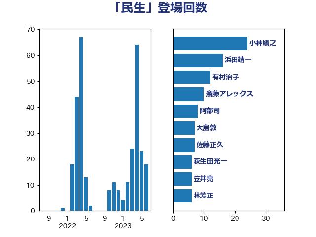

単語「民生」

| 小林鷹之 | 自由民主党 | 24 回 |
| 浜田靖一 | 自由民主党 | 16 回 |
| 有村治子 | 自由民主党 | 12 回 |
| 斎藤アレックス | 国民民主党 | 10 回 |
| 阿部司 | 日本維新の会 | 8 回 |
| 大島敦 | 立憲民主党 | 7 回 |
| 佐藤正久 | 自由民主党 | 7 回 |
| 萩生田光一 | 自由民主党 | 6 回 |
| 笠井亮 | 日本共産党 | 6 回 |
| 林芳正 | 自由民主党 | 6 回 |
| 岸田文雄 | 自由民主党 | 6 回 |
| 塩川鉄也 | 日本共産党 | 6 回 |
| 鈴木敦 | 国民民主党 | 4 回 |
| 猪瀬直樹 | 日本維新の会 | 4 回 |
| 永岡桂子 | 自由民主党 | 4 回 |
| 平木大作 | 公明党 | 4 回 |
| 石川大我 | 立憲民主党 | 3 回 |
| 松野博一 | 自由民主党 | 3 回 |
| 岩渕友 | 日本共産党 | 3 回 |
| 山口晋 | 自由民主党 | 3 回 |
| 八木哲也 | 自由民主党 | 3 回 |
| 井野俊郎 | 自由民主党 | 3 回 |
| 高木かおり | 日本維新の会 | 2 回 |
| 高市早苗 | 自由民主党 | 2 回 |
| 音喜多駿 | 日本維新の会 | 2 回 |
| 鈴木英敬 | 自由民主党 | 2 回 |
| 鈴木義弘 | 国民民主党 | 2 回 |
| 赤嶺政賢 | 日本共産党 | 2 回 |
| 篠原豪 | 立憲民主党 | 2 回 |
| 田島麻衣子 | 立憲民主党 | 2 回 |
| 渡辺周 | 立憲民主党 | 2 回 |
| 泉健太 | 立憲民主党 | 2 回 |
| 杉尾秀哉 | 立憲民主党 | 2 回 |
| 平将明 | 自由民主党 | 2 回 |
| 山谷えり子 | 自由民主党 | 2 回 |
| 山添拓 | 日本共産党 | 2 回 |
| 山口壯 | 自由民主党 | 2 回 |
| 太田房江 | 自由民主党 | 2 回 |
| 大石あきこ | れいわ新選組 | 2 回 |
| 大塚耕平 | 国民民主党 | 2 回 |
| 國重徹 | 公明党 | 2 回 |
| 伊藤俊輔 | 立憲民主党 | 2 回 |
| 高橋千鶴子 | 日本共産党 | 1 回 |
| 近藤和也 | 立憲民主党 | 1 回 |
| 角田秀穂 | 公明党 | 1 回 |
| 西村康稔 | 自由民主党 | 1 回 |
| 蓮舫 | 立憲民主党 | 1 回 |
| 矢倉克夫 | 公明党 | 1 回 |
| 田嶋要 | 立憲民主党 | 1 回 |
| 熊田裕通 | 自由民主党 | 1 回 |
| 湯原俊二 | 立憲民主党 | 1 回 |
| 浅川義治 | 日本維新の会 | 1 回 |
| 水野素子 | 立憲民主党 | 1 回 |
| 櫛渕万里 | れいわ新選組 | 1 回 |
| 榛葉賀津也 | 国民民主党 | 1 回 |
| 梅谷守 | 立憲民主党 | 1 回 |
| 柴田巧 | 日本維新の会 | 1 回 |
| 柳本顕 | 自由民主党 | 1 回 |
| 杉本和巳 | 日本維新の会 | 1 回 |
| 早稲田ゆき | 立憲民主党 | 1 回 |
| 斉藤鉄夫 | 公明党 | 1 回 |
| 平山佐知子 | 無所属 | 1 回 |
| 岡田直樹 | 自由民主党 | 1 回 |
| 山崎誠 | 立憲民主党 | 1 回 |
| 小里泰弘 | 自由民主党 | 1 回 |
| 小沼巧 | 立憲民主党 | 1 回 |
| 小山展弘 | 立憲民主党 | 1 回 |
| 大岡敏孝 | 自由民主党 | 1 回 |
| 堂込麻紀子 | 無所属 | 1 回 |
| 嘉田由紀子 | 無所属 | 1 回 |
| 勝部賢志 | 立憲民主党 | 1 回 |
| 伊波洋一 | 無所属 | 1 回 |
| 伊佐進一 | 公明党 | 1 回 |